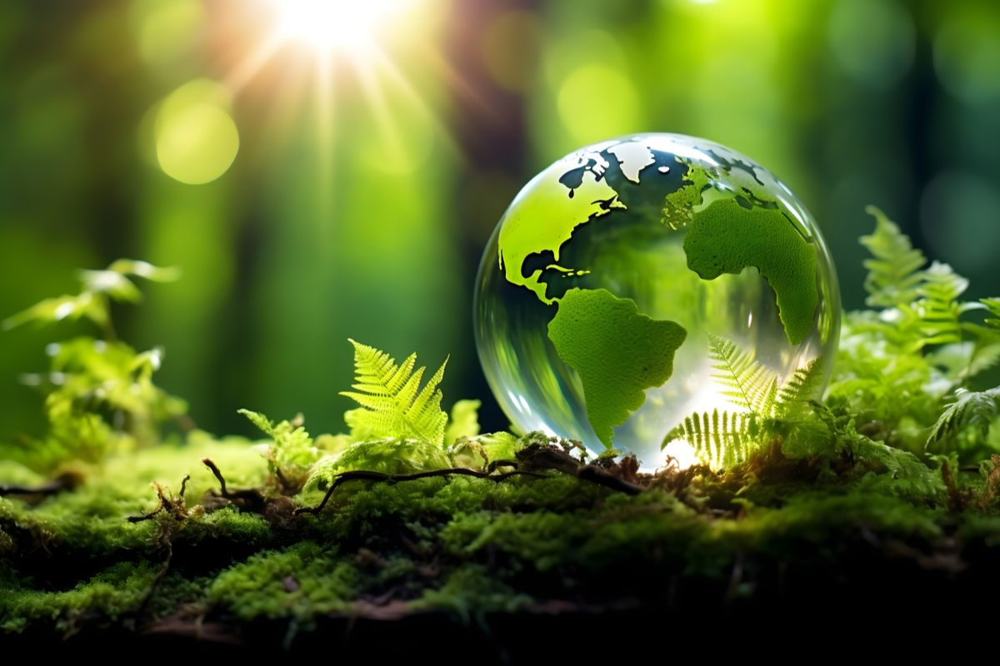

|
ENVRONMENTAL CONSERVATION  "PROTECTING OUR ENVIRONMENT IS OUR PRIORITY" |
| HOME | ABOUT US | PROJECTS | CONTACT US | APPLY |
| ABOUT US The achievement of Sustainable Development Goals requires that the earth’s natural resources are wisely utilized, conserved and sustained over time. Sustainable natural resource management is already a great challenge because of multiple pressures on resources that result from population growth, urbanization, industrialization and increasing and changing consumption patterns. |
|
BENEFITS OF A CONSERVED ENVIRONMENT |
|
Biodiversity Preservation: Conservation efforts help maintain diverse ecosystems, which are essential for the survival of various species. This biodiversity is crucial for resilience against diseases and environmental changes. Climate Regulation: Healthy ecosystems, such as forests and wetlands, play a critical role in regulating the climate by absorbing carbon dioxide and mitigating the effects of climate change. Sustainable Resources: Conservation promotes the sustainable use of natural resources, ensuring that future generations have access to clean water, fertile soil, and raw materials for food and energy. |
| MUWANGUZI GIDEON PAUL U0193/008 |